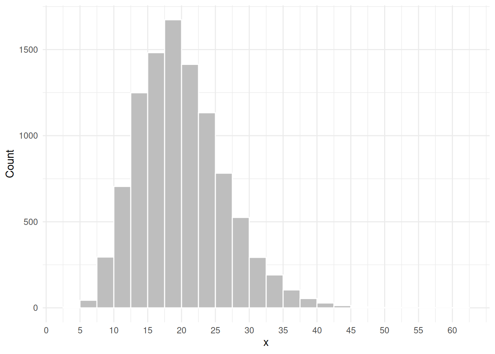
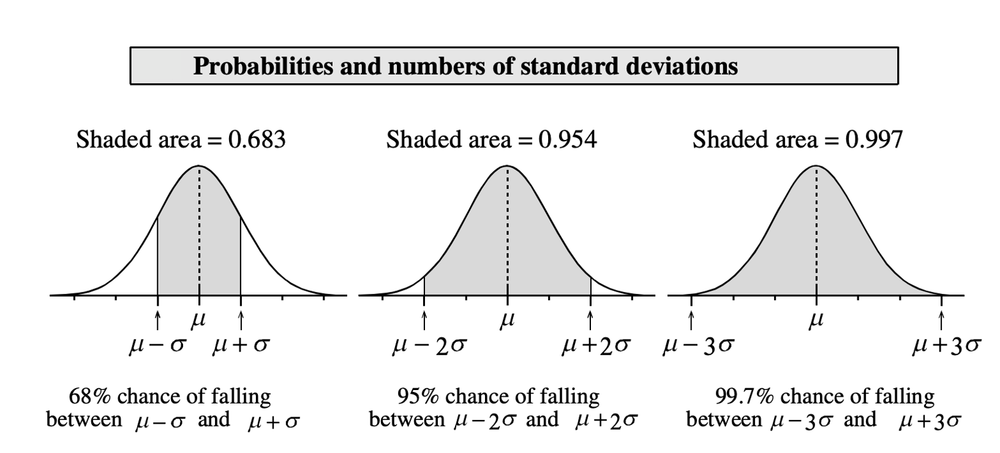
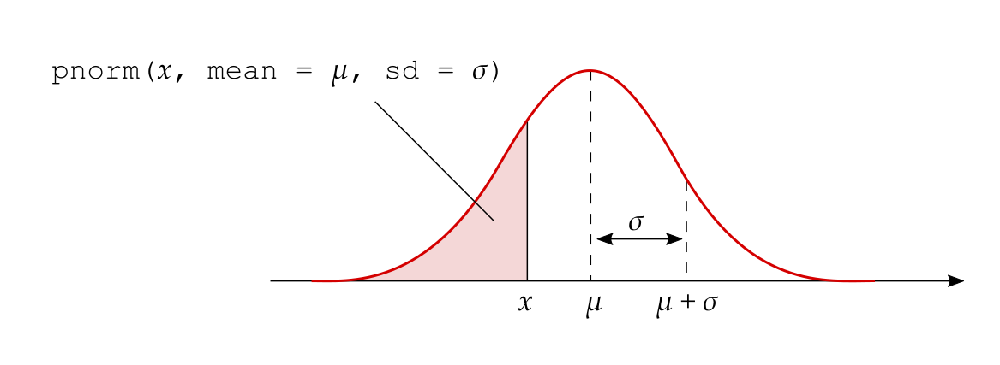
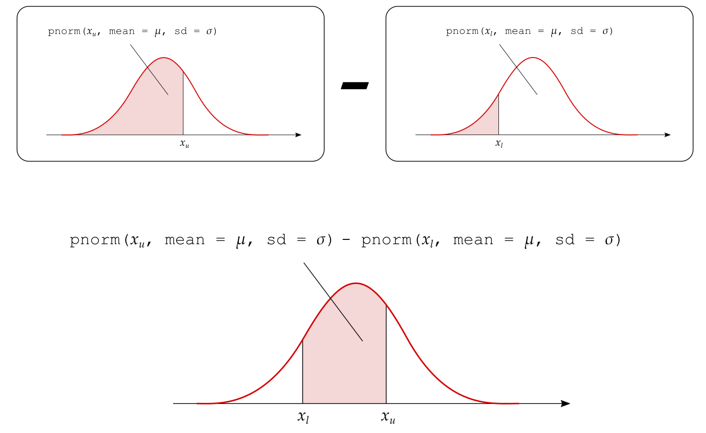
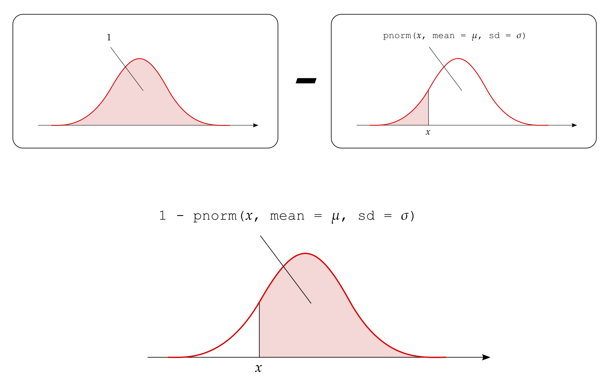
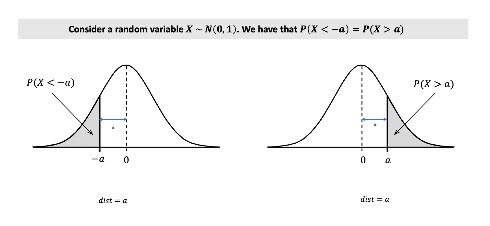
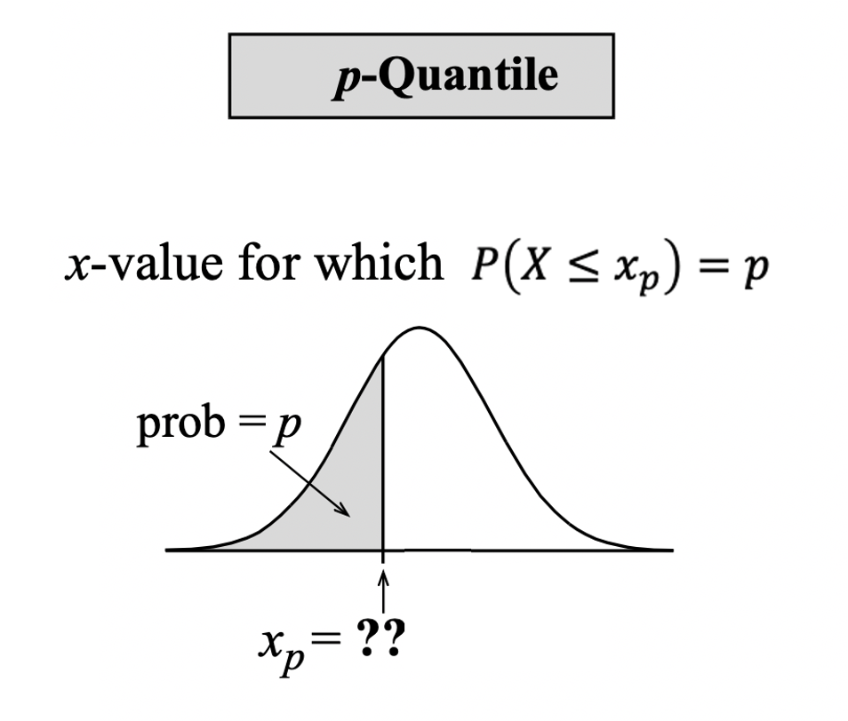
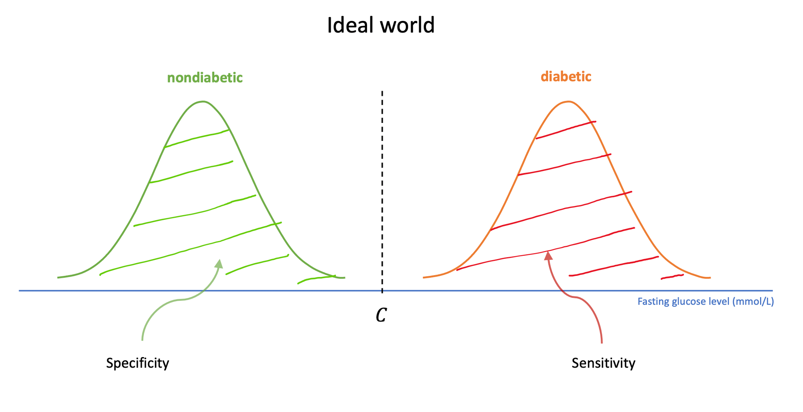
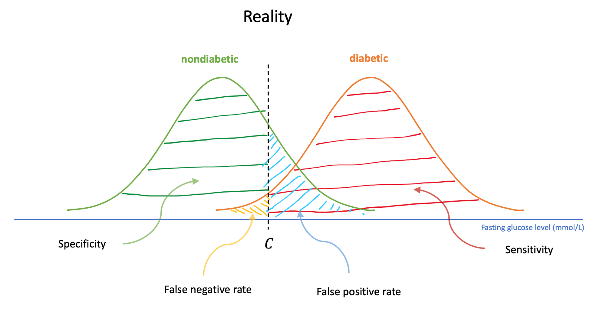

Continuous random variables
LEARNING OBJECTIVES
- Understand the concept of density function.
- Be able to link probabilities to areas under a density function.
- Recognise the mean as the centre of gravity of a density curve and the standard deviation as the spread of the density curve.
- Be able to work with a normal distribution.
Continuous random variables
Recall that a random variable is continuous if there are no gaps between the possible values it can take.

Imagine a spinner numbered with the hours of the day. If you were to spin it with some strength, what’s the probability of the hand stopping exactly at 3.5173847294 hours?
Well, there is only one way to observe 3.5173847294, while there are an infinite number of possibilities between 0 and 24 hours (you could have as many decimals as you wish).
Define the event \(A = \{ 3.5173847294 \}\). If you were to calculate the probability of observing \(A\) using the standard formula you would get: \[ P(A) = \frac{n_A}{n} = \frac{1}{\infty} = 0 \]
The probability of the hand stopping exactly at 3.5173847294 hours is 0.
Check this with R:
1 / Inf## [1] 0For this reason, we cannot compute probabilities for continuous random variables in the same way as we did in the previous weeks (number of outcomes in the event / number of possible outcomes).
Key point
For continuous random variables we can only compute the probability of observing a value in a given interval. For example, the probability that the hand stops in between 3 and 3.5 hours.
Consider the histogram shown below. The height of each rectangle will tell you the number of people having a value within a specific interval. For example, the number of people having a value of \(x\) between 20 and 22.5.

Proportions as areas: the density histogram
The natural gestation period for human births has a mean of about 266 days and a standard deviation of about 16 days. A group of researchers recorded the gestation period (in days) of 10,000 babies and the distribution is shown below as a frequency histogram (left panel) and relative frequency histogram (right panel).
Figure 1: Frequency histogram (left panel) and relative frequency histogram (right panel) of gestation period.
The histogram is unimodal, with the modal interval extending from 266 to 270 days. The distribution is symmetric around the centre (266). This means that if you were the fold the histogram at 266 days, the two halves would match when superimposed.
The histogram also highlights some variability in gestation days from person to person, with some women giving birth after as low as 200 days or as high as 320 days.
Usually, histograms are drawn with the height of the rectangle for the \(j\)th interval being either the frequency (count) \(n_j\) or the relative frequency \(n_j / n\) of observations falling into that interval.
For example, for roughly 400 women the gestation period was between 240 and 245 days. If we use the relative frequency, instead, the height of the rectangle tells us the proportion of observations in that interval. In this case, the proportion of women with a gestation period between 240 and 245 days is \(400 / 10,000 = 0.04\).
We now discuss a third type of histogram called the density histogram, in which we adjust the heigh of the rectangle so that the area is equal to the relative frequency. This is accomplished by changing the height to \(n_j / (n w)\) where \(w\) is the interval width.
Why does this work? \[ area = width \cdot height = w \cdot \frac{n_j}{n w} = \frac{n_j}{n} \]
So now it is the area of the \(j\)th rectangle that tells us the proportion of observations in the \(j\)th interval.
Figure 2: Density histogram of the gestation period for the 10,000 women in the study.
In Figure 2(a) the proportion of women under study whose gestation period falls within any class interval is the area of the corresponding rectangle. For example the proportion of women with a gestation period between 240 and 245 days is equal to \(area = width \cdot height = 5 \cdot 0.008 = 0.04\), which matches the relative frequency histogram.
Furthermore, we can obtain the proportion of women whose gestation period falls between the limits \(a = 240\) days and \(b = 255\) days by adding the areas of all the rectangles between these limits. As the graph in Figure 2(b) tells us, the area of the shaded part is .196. Thus, the proportion of women with a gestation period between 240 and 255 days is 0.196 or 19.6% of the women in the study population.
This correspondence between area and proportions is the foundation on which the probability for continuous random variables is built. In fact, we can say that the probability that a randomly picked woman from the study population has a gestation period between 240 and 255 days is 0.196.
Also, note that the total area under a density histogram is \[ \sum \left( \frac{n_j}{n w} \cdot w \right) = \frac{\sum n_j}{n} = 1 \]
Let’s now summarise what we have learned about density histograms:
the vertical scale is relative frequency / interval width
the total area under the histogram is 1
the proportion of data between \(a\) and \(b\) is the area under the histogram between \(a\) and \(b\)
Figure 3: Density curve of the gestation period for the 10,000 women in the sample.
In Figure 3(c) we have superimposed an approximating smooth curve on top of the density histogram. Figure 3(d) displays only the approximating smooth curve. Furthermore, we have also highlighted in green the area under that curve in between the same limit as the histogram (\(a = 240\) and \(b = 255\)) and calculated the highlighted area. That area turned out to be 0.194, which is very close to the area of 0.196 computed from the density histogram.
From this, it is quite easy to see how areas under the smooth curve in between two particular limits are in good agreement with the same areas computed using a density histogram, and thus with proportions of people in the study.
Such smooth curve is called a density curve or density function. The probability distribution of a continuous random variable \(X\) is specified in terms of its density function. We calculate the probability that the random variable \(X\) is between \(a\) and \(b\) by finding the area under the density curve between \(a\) and \(b\).
Let’s now summarise what we have learned about density functions:
The probability distribution of a continuous random variable is specified in terms of a density function (i.e., a density curve).
Probabilities are obtained as areas under the density curve.
The total area under the curve is one.
This is because the total probability must be one: \(P(R_X) = 1\).
The curve is always greater than or equal to zero for all possible values of the random variable.
This is similar to saying that probabilities cannot be negative.
Last week we said that the probability distribution of a random variable \(X\) provides a concise representation of the random variable in terms of the set of all the possible values it can take and the corresponding probabilities. Clearly, this gives an immediate global picture of the random variable.
Probability distribution for a continuous random variable
The probability distribution of a continuous random variable \(X\) provides the possible values of the random variable and their corresponding probability densities.
A probability distribution can be in the form of a graph or mathematical formula.
The density curve is the graphical representation of the probability distribution, while the density function is the mathematical formula of the curve.
The normal distribution
A symmetric and bell-shaped density curve is called a normal density curve.
Normal distribution
A continuous random variable is said to be normally distributed, or to have a normal probability distribution, if its distribution has the shape of a normal curve (it is symmetric and bell-shaped).
The normal density function is the function used to calculate probabilities (as areas under the density curve) for a normally distributed random variable.
Key question
How can we make sure that the normal curve can adapt to any symmetric and bell-shaped density histogram?
Every histogram can be centred at a different value and have a different spread. Hence, we need to specify:
- where the normal curve should be centred at;
- what should the spread of the normal curve be.
From this we can see that the normal curve depends on two quantities called the parameters of the normal distribution (see Figure 4):
- the mean \(\mu\), specifying the centre of the distribution;
- the standard deviation \(\sigma\), specifying the spread of the distribution.
Figure 4: Normal curves for different means and standard deviations.
As we can see, changing \(\mu\) shifts the curve along the axis, while increasing \(\sigma\) increases the spread and flattens the curve.
The formula for the normal density curve which we plotted above is provided below. However, you do not have to memorise it as this is already implemented in R: \[ f(x) = \frac{1}{\sigma \sqrt{2 \pi}} e^{-\frac{(x - \mu)^2}{2 \sigma^2}} \] for some values of \(\mu\) and \(\sigma\).
The same function in R is:
dnorm(x, mean = <mean>, sd = <sd>)where:
xrepresents the value of the random variablemeanthe mean of the normal curvesdthe standard deviation of the curve
We write that a random variable \(X\) follows a normal distribution with mean \(\mu\) and standard deviation \(\sigma\) as \[ X \sim N(\mu, \sigma) \]
Clearly, the mean and standard deviation of \(X\) will be \(E(X) = \mu\) and \(SD(X) = \sigma\) respectively.
We use lowercase letters such as \(x, a, b\) to denote an observed value, or a particular value, of the random variable \(X\).
The 68-95-99.7% rule
A variable which is normally distributed has:
68% of the observations (values) within \(1\sigma\) of the \(\mu\)
95% of its observations (values) within \(2\sigma\) of the \(\mu\)
99.7% of its observations (values) within \(3\sigma\) of the \(\mu\)

Obtaining probabilities
Before describing how to compute the probabilities for a continuous random variable using R, we need to discuss an important property that only holds for continuous random variables:
Interval endpoints for continuous random variables
When performing calculations involving a continuous random variable, we do not have to worry about whether interval endpoints are included or not in the calculation: \[ P(a \leq X \leq b) = P(a \leq X < b) = P(a < X \leq b) = P(a < X < b) \]
This is due to the fact that the probability of \(X\) being equal to a specific value is 0: \[ \begin{aligned} P(X \leq x) &= P(X < x) + P(X = x) \\ &= P(X < x) + 0 \\ &= P(X < x) \end{aligned} \]
We compute areas under the normal curve using the function pnorm(x, mean, sd).
This returns the area to the left of x in a normal curve centred at mean and having standard deviation sd:
\[
P(X \leq x) = P(X < x) = \texttt{pnorm}(x, \texttt{ mean = } \mu, \texttt{ sd = } \sigma)
\]
The following figure shows the type of areas returned by the pnorm function:
Figure 5: R computes lower-tail probabilities.
For example, the probability that the random variable \(X \sim N(\mu = 5, \sigma = 2)\) is less than 1 is:
pnorm(1, mean = 5, sd = 2)## [1] 0.02275013There are three types of probabilities that we might want to compute:
The probability that \(X\) is less than a given value: \(P(X < x)\)
The probability that \(X\) is between a lower and an upper value: \(P(x_l < X < x_u)\)
The probability that \(X\) is greater than a given value: \(P(X > x)\)
We will now analyse each case in turn and show how each of these is computed.
1. Area to the left of a value \(x\)
The probability that \(X < x\) is directly returned by pnorm():

2. Area between the values \(x_l\) and \(x_u\)
The probability that \(X\) is between a lower (\(x_l\)) and an upper (\(x_u\)) value can be obtained as: \[ P(x_l < X < x_u) = P(X < x_u) - P(X < x_l) \]

3. Area to the right of \(x\)
The probability to the right of \(x\) is one minus the probability to the left of \(x\): \[ P(X > x) = 1 - P(X < x) \]

Symmetry of the normal distribution
We now stress an important property of the normal distribution, namely that it is symmetric around the mean.
For simplicity, we will start by discussing the case when \(X \sim N(0, 1)\). For a normally distributed random variable \(X\) with mean 0 and standard deviation 1 we have that \(P(X < -a) = P(X > a)\):

We will verify this with R. If \(X \sim N(0,1)\), we have that \(P(X < -1) = P(X > 1)\):
# P(X < -1)
pnorm(-1, mean = 0, sd = 1)## [1] 0.1586553# P(X > 1)
1 - pnorm(1, mean = 0, sd = 1)## [1] 0.1586553In the case of a generic mean \(\mu\), the two endpoints will change according to the distance from the mean. Consider \(X \sim N(3, 1)\) and let’s focus on \(P(X < 2)\). The value 2 is one below the mean, so the corresponding upper value should be one above the mean, i.e. \(P(X > 4)\).
In general, if the lower endpoint is \(a\), the upper endpoint \(b\) is found by:
- Computing the distance from the mean, \(dist = \mu - a\)
- Adding to the mean the distance previously found, \(b = \mu + dist = \mu + (\mu - a)\)
# P(X < a)
pnorm(2, mean = 3, sd = 1)## [1] 0.1586553# P(X > b)
1 - pnorm(3 + (3 - 2), mean = 3, sd = 1)## [1] 0.1586553We conclude this section with an important observation. The probability that a random variable \(X \sim N(0, 1)\) is less than \(-a\) or greater than \(a\) can be simply computed as twice either of those probabilities because of symmetry: \[ P(X < -a) + P(X > a) = 2 \cdot P(X < -a) = 2 \cdot P(X > a) \]
The inverse problem: quantiles and percentiles
In this section we will examine the inverse problem to the one of calculating the probability that \(X < x\).
Given a probability \(p\), what’s the value \(x\) that cuts to its left a probability of \(p\)?

That value, called the \(p\)-quantile, is the value \(x_p\) for which the lower-tail probability is \(p\):
\[ \text{value }x_p\text{ such that} \qquad P(X \leq x_p) = p \]
Percentiles and quantiles are two words used to express the same idea. We use percentile when speaking in terms of percentages and quantile when speaking in terms of proportions (or probabilities) between 0 and 1.
The 50th percentile (or \(0.5\)-quantile) is the value \(x_{0.5}\) that cuts a 0.5 probability to its left. You actually know that the value such that 50% of the observations are lower and 50% are higher is called the median.
In R, you calculate the \(p\)-quantile with the function
qnorm(p, mean, sd)This will return the value \(x\) such that \(P(X \leq x) = p\). That value is typically written \(x_p\).
For example, if \(X \sim N(0, 1)\), the value cutting an area of 0.025 to its left is
qnorm(0.025, 0, 1)## [1] -1.959964while that cutting an area of 0.975 to its left is
qnorm(0.975, 0, 1)## [1] 1.959964The \(0.025\)-quantile is \(x_{0.025} = -1.96\), and the \(0.975\)-quantile is \(x_{0.975} = 1.96\).
Working in standard units
Instead of always specifying the mean and the standard deviation of the normal distribution, we can work with a reference normal distribution that has a mean equal to 0 and standard deviation equal to 1. This is known as the standard normal distribution.
Standard normal distribution
The standard normal distribution, denoted \(Z \sim N(0, 1)\), is a normal distribution with mean = 0 and standard deviation = 1.
The R functions dnorm(x, mean, sd) and pnorm(x, mean, sd) assume that mean = 0 and sd = 1 if not provided. In other words, they assume a standard normal distribution by default.
For example, the following two functions return the same output
dnorm(2)## [1] 0.05399097dnorm(2, mean = 0, sd = 1)## [1] 0.05399097and similarly for pnorm().
In order to transform a value \(x\) from a normal distribution with mean = \(\mu\) and sd = \(\sigma\) to a score on the standard normal scale, we must use the z-score transformation.
The z-score measures distance in terms of the number of standard deviations from the mean: \[ z = \frac{x - \mu}{\sigma} \qquad (\text{standard units or } z\text{-}scores) \]
z-score
The z-score of \(x\) is the number of standard deviations \(x\) is from the mean.
Let \(X \sim N(\mu, \sigma)\) and \(Z \sim N(0, 1)\). The following relation holds: \[ P(X < x) = P \left( \frac{X - \mu}{\sigma} < \frac{x - \mu}{\sigma} \right) = P(Z < z) \]
This means that the probability, when computed on the original normal distribution or on the standard normal distribution, will be the same as long as you use the z-score of \(x\) for the standard normal distribution.
Consider the following cases:
- You observe \(x = 4.3\) from a \(N(3, 2)\) distribution. The z-score is \(z = (4.3 - 3) / 2 = 0.65\)
- You observe \(x = 4.3\) from a \(N(3, 0.2)\) distribution. The z-score is \(z = (4.3 - 3) / 0.2 = 6.5\)
In case (a), your observed value 4.3 is 0.65 standard deviations away from the mean. In case (b), the observed value 4.3 is 6.5 standard deviations away from the mean.
Observing a value of 4.3 from a \(N(3,2)\) population is very likely, as 68% of the observations are within 1 \(\sigma\) of the mean. However, observing a value of 4.3 from a \(N(3,0.2)\) distribution is very unlikely, as almost all the values will be within 3 \(\sigma\) of the mean. Such a high z-score provides us with an element of surprise. We might want to inspect that value further as it could be an outlier or a typing error of who has entered the data.
As you can see, z-scores are particularly useful for comparing observations across distributions having a different mean and standard deviation.
Summary
When a histogram shows that a variable’s distribution is symmetric and bell-shaped, we can say that the variable is normally distributed and we can model the distribution with a mathematical curve called the normal density function.
We saw that the normal distribution depends on two parameters that control the centre and spread of the normal density curve:
- the mean;
- the standard deviation.
These two parameters make sure that the normal curve can fit histograms that have different centres and spreads.
In other words, if you know that a distribution is normal (shape), then the mean (centre) and standard deviation (spread) tell you everything else about the distribution.
In R, the equation of the normal density curve is given by the function dnorm(x, mean, sd).
We can use the normal curve to compute the probability of intervals as the area under the curve in that interval.
The function to compute the area under a normal curve to the left of x is pnorm(x, mean, sd).
| Probability | R command |
|---|---|
Probability of observing a value less than or equal x |
pnorm(x, mean, sd) |
Probability of observing a value between xl and xu |
pnorm(xu, mean, sd) - pnorm(xl, mean, sd) |
Probability of observing a value greater than xu |
1 - pnorm(xu, mean, sd) |
The value \(x_p\) cutting an area = \(p\) to its left is returned by qnorm(p, mean, sd). This is called the \(p\)-quantile of \(X\).
Glossary
- Continuous random variable. A variable that takes on numerical values determined by a chance process which can have any number of decimals.
- Density function. The function which provides the probability that a random variable is within an interval in terms of the area under that curve between that interval.
- Normal distribution. The probability distribution of a random variable which has a symmetric and bell shaped density curve.
- \(p\)-quantile. The \(x_p\) value cutting an area = \(p\) to its left. In other words, the \(x_p\) value such that \(P(X \leq x_p) = p\).
Exercises
A test for verbal memory
The Selective Reminding Task (SRT) test is sometimes used to test several aspects of verbal memory. It involves hearing, recalling, and learning 12 presented words. The scores corresponding to different aspects of verbal memory such as total recall, storage into long-term memory, and so on are combined to give an overall score. Let \(X\) represent the SRT score of a female student in an age group of interest, and suppose that \(X \sim N(\mu = 126, \sigma = 10)\).
Find the following probabilities:
- \(P(X > 140)\)
- \(P(120 < X < 133)\)
- \(P(X < 119.5)\)
What’s the z-score for someone who scored 120 on the SRT test? Also comment on what the z-score means.
What would the answer to question 2 be for someone who scored 140 on the SRT test?
A research company wants to use the SRT test to identify study participants with good memory skills. They are going to recruit candidates among the top 15% for the test. What should a participant score in order to be eligible?
What would the answer to the previous question be if the company considered the top 10%?
A clinic is using the SRT test to check whether a student involved in an accident could have internal head injuries. The doctors suspect a patient has internal head injuries if their score is too low. Below what value do 1% of the students’ SRT test scores fall?
What interval of SRT scores covers the central 90% of students’ test results?
And for the central 60% of test results?
A test for diabetes
A standard test for diabetes is based on measuring glucose levels in blood after a patient has been told to fast for a certain amount of time. For healthy people the mean glucose level after fasting is found to be 5.31 mmol/L with a standard deviation of 0.58 mmol/L. For untreated diabetics the mean is 11.74 mmol/L, and the standard deviation is 3.50 mmol/L. The distribution of fasting glucose levels in both groups appears to be approximately normally distributed.
To carry out a clinical test based on fasting glucose levels, we need to set a cutoff point, \(C\), so that if the patient’s glucose level after fasting is at least \(C\) we say they have diabetes. If it is lower than the cutoff point, we can say they do not have diabetes. Suppose we use \(C = 6.5\).
What is the probability that a person with diabetes is correctly diagnosed as having diabetes?
What is the probability that someone without diabetes is correctly diagnosed as not having diabetes?
The probability of correctly diagnosing a patient as having diabetes is called the sensitivity of the test, while the probability of correctly diagnosing that a healthy individual does not have diabetes is called the specificity of the test. In an ideal situation, we want tests to be both very sensitive (very good at spotting the condition if it is there) and very specific (rarely signalling the presence of the condition if it is not there). However, with blood glucose levels tests (and many other tests), there is some overlap in fasting glucose levels between the two groups (healthy and diabetic). Some healthy individuals have higher levels than some diabetics, so our test cannot be both 100% sensitive and 100% specific.


What is the sensitivity of the test if we use \(C = 5.7\)?
What is the specificity?
If you look at your answers to (a), (b), (c), and (d), you will see that by making \(C\) smaller, we get a more sensitive test that is less specific, whereas by making \(C\) large, we get a more specific test that is less sensitive. In deciding what value of \(C\) to use, we have to trade off sensitivity for specificity. To do so in a reasonable way, some assessment is required of the relative “costs” of misdiagnosing a diabetic and misdiagnosing a nondiabetic. Suppose we required 98% sensitivity.
What is the value of \(C\) giving a sensitivity of 0.98?
How specific is the test when \(C\) has this value?